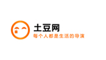

 土豆网公司成立于1998年11月，是目前中国最大的互联网综合服务提供商之一，也是中国服务用户最多的互联网企业之一。成立10多年以来，腾讯一直秉承一切以用户价值为依归的经营理念，始终处于稳健、高速发展的状态。2004年6月16日，腾讯公司在香港联交所主板 公开上市（股票代号700）。
土豆是中国最早和最具影响力的网络视频平台，是中国网络视频行业的领军品牌。其前身土豆网于2005年4月15日正式上线，是全球最早上线的视频网站之一。2014年1月，“土豆网”正式更名为“土豆”，标志着土豆进入品牌发展 的新阶段。
“每个人都是生活的导演”是土豆从创立第一天始的价值观。土豆相信年轻人的想象力、创造力，相信土豆的平台能 帮助年轻人创造出更多，更好的影像作品，来表达对自己、生活和这个时代的看法。同时，土豆提倡尊重“每个人”的个性，尊重每个人自主地选择自己的生活，成为自己成长的导演。
2012年3月12日，优酷股份有限公司(NYSE: YOKU) (“优酷”) 和土豆股份有限公司 (NASDAQ: TUDO) (“土豆”) 共同宣布，优酷和土豆将以100%换股的方式合并。2012年8月20日，优酷土豆合并方案获双方股东大会高票批准通过，优酷土豆集团公司正式诞生。2013年4月，优酷土豆集团宣布进入“集团BU化”运营阶段，提出“优酷更优酷，土豆更 土豆”的发展战略。
2013年2月，杨伟东成为土豆总裁，宣布打造土豆“成为中国年轻人最喜爱的视频网站”，并明确土豆“成为中国 最具影响力的青年文化品牌”的愿景，确立了土豆“青春、个性、自主、有趣”的品牌定位，土豆全面进入2.0阶段。通过年轻化的内容、年轻化的产品技术和年轻化的UGC/PGC生态三个方面来全面推动土豆2.0战略。
2014年3月土豆推出“4+1”战略。其中“4”代表的是土豆在内容方面更专注动漫、音乐、韩国娱乐、时尚四个 垂直文化领域。而“1”则代表土豆推出的“一个频道”战略，基于“频道主”和“订阅者”两个视角全方位架构跨屏和线上线下体验系统，并结合用户体验、商业模式、运营机制等环节，提出了5个“一”规划。
根据第三方调研公司艾瑞的数据，优酷土豆集团在PC端和移动端全平台各项数据持续占据视频行业绝对领先优势，截止2014年3月，土豆每月独立访问用户数量增长到2.43亿。2013年土豆在移动端的增长也非常迅猛，2013年三季度，土豆移动端获得了高速增长，月均覆盖用户较当年3月增长11倍，平均增长率超过40%；月均视频播放量增长23倍，月 平均增幅达60%。
土豆网是中国最早和最具影响力的网络视频平台， 是中国网络视频行业的领军品牌。于2005年4月 15日正式上线，是全球最早上线的视频网站之一。 2014年1月，“土豆网”正式更名为“土豆”，标志 着土豆网进入品牌发展的新阶段。
土豆网相信年轻人的想象力、创造力，相信土豆 的平台能帮助年轻人创造出更多，更好的影像作 品，来表达对自己、生活和这个时代的看法。同 时，土豆网提倡尊重“每个人”的个性，尊重每个 人自主地选择自己的生活，成为自己成长的导演 。2012年8月20日，土豆和优酷合并成优酷土豆 集团
2012年3月12日，优酷股份有限公司(NYSE: YOKU) (“优酷”) 和土豆股份有限公司 (NASDAQ: TUDO) (“土豆”)共同宣布，优酷和土豆将以100%换股的方 式合并。2012年8月20日，优酷土豆合并方案获双方 股东大会高票批准通过，优酷土豆集团公司正式诞生 。2013年4月，优酷土豆集团宣布进入“集团BU化”运 营阶段，提出“优酷更优酷，土豆更土豆”的发展战略。
2013年2月，杨伟东成为土豆总裁，宣布打造土 豆“成为中国年轻人最喜爱的视频网站”，并明确 土豆“成为中国最具影响力的年轻文化品牌”的愿 景，确立了土豆“青春、个性、自主、有趣”的品 牌定位，土豆全面进入2.0阶段。通过年轻化的 内容、年轻化的产品技术和年轻化的UGC/PGC生 态三个方面来全面推动土豆2.0战略。
2014年1月到3月，土豆大首页和旗下19个一级频道新 一轮的改版顺利完成。此次改版淋漓尽致展现出最新的 互联网前沿的自适应屏幕技术及扁平化的设计元素。新 版土豆首页加强了“频道”概念的体现，凸显了土豆频道 化战略方向，进一步巩固了土豆作为中国版YouTube难 以撼动的地位和决心。从内容结构上，进一步强化年轻 人的品牌定位，在动漫、时尚、音乐、韩娱等领域全力 出击，各类独家重磅内容成为主打，为网友提供最佳观 看体验。
2015年10月16日，阿里巴巴集团宣布已经向优酷土豆董 事会发出要约，收购优酷土豆剩余全部流通股，按照每 ADS（美国存托凭证）26.60美元计算，预计总金额很可 能超过45亿美元。同时，阿里巴巴提议，由优酷创始人 古永锵继续担任优酷土豆主席及CEO。这一要约收购已经 得到了包括古永锵，成为基金及其关联方在内优酷创始 股东们的支持。